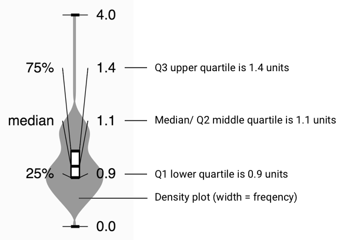

Data
In this visulization, we used a detailed electronic log from a child recently diagnosed with type 1 diabetes. We drew the data from three resources: Nightscout, Tidepool, and Google Sheets. The dataset contains timestamped information about blood glucose levels from fingerstick glucose meters, continuous glucose monitor time series, lispro and glargine insulin delivery amounts by injections or pump, protocol changes over time, meal carbohydrate count and meal contents, intense exercise, which of five regular caregivers were responsible for treatments, and free-text notes of symptoms as well as reasoning behind protocol violations.
How to Read the Visualization

How to Read the Violin Plot
Violin plots are used to show variation and probability density. Here's an example of a violin plot of breakfast insulin distribution.
